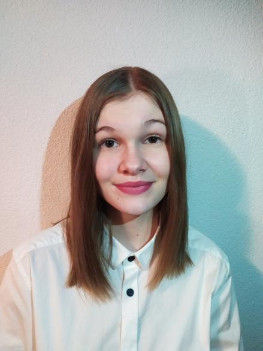
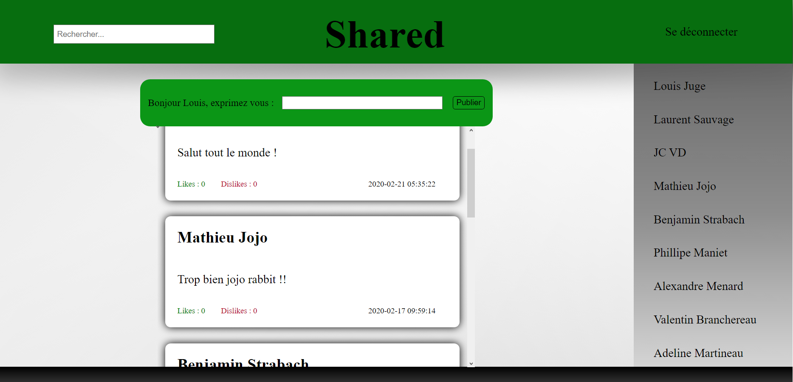
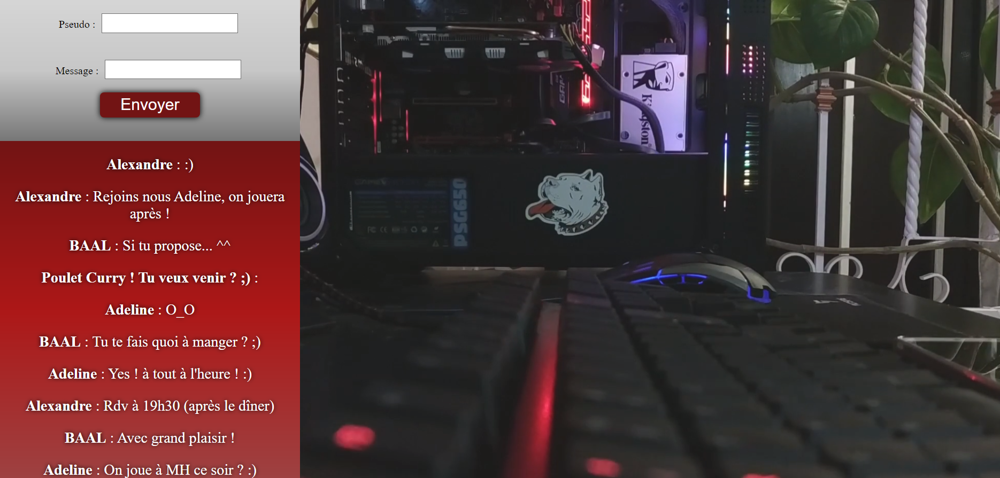
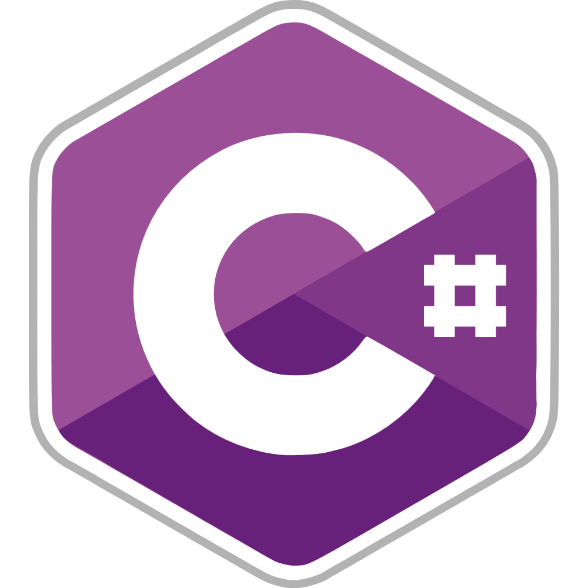
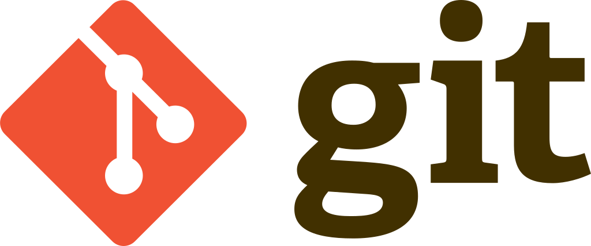
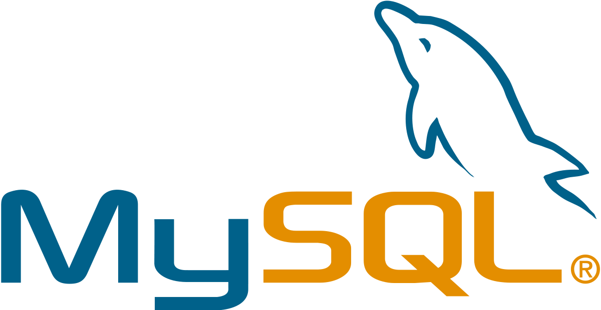
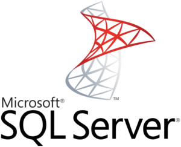
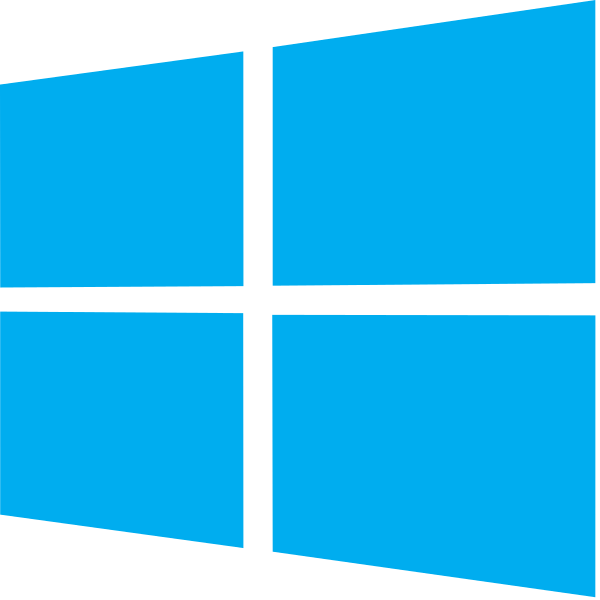
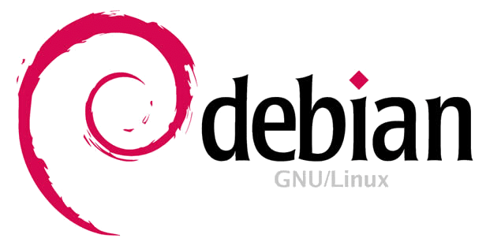

Qui suis-je ?
Je m'appelle Adeline, j'apprends le développement en Autodidacte et je vous souhaite la bienvenue sur mon Portfolio !
Vous trouverez ci-dessous les projets que j'ai réalisés afin de progresser dans divers langages de programmation. Je souhaite acquérir des compétences pour entrer en BTS SIO option SLAM.
Autrement, mes passions sont les suivantes : la musique (je joue d'ailleurs de la guitare), les livres, les séries, et les jeux vidéos !

Mes projets
Shared (Réseau Social en Php) :

MiniTchat (OpenClassroom) en Php :

Ma Veille Technologique
Je souhaite lors de mon BTS réaliser une veille Technologique sur la Cyber Sécurité face aux Black Hats.
Mes Technologies acquises et en cours d'acquisition
Langage de programmation :
- Coté Front -


- Coté Back -


- Gestion de code -

Base de données :


Système et administration réseau (en cours de renseignements sur la mise en place de serveurs) :

